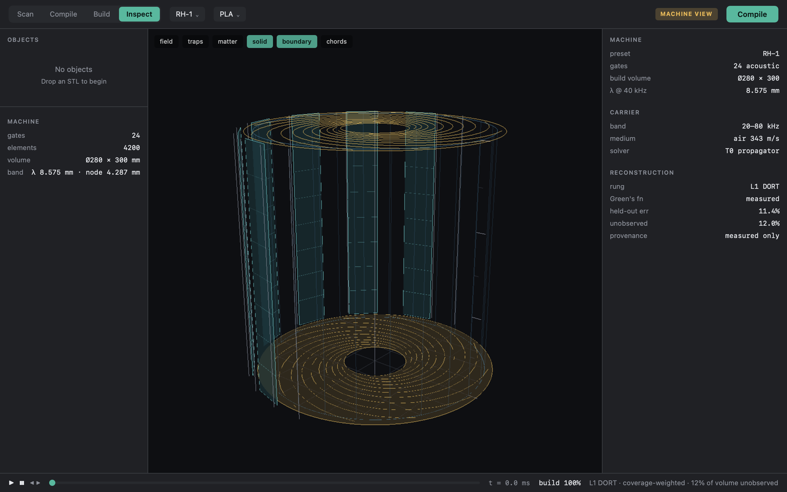
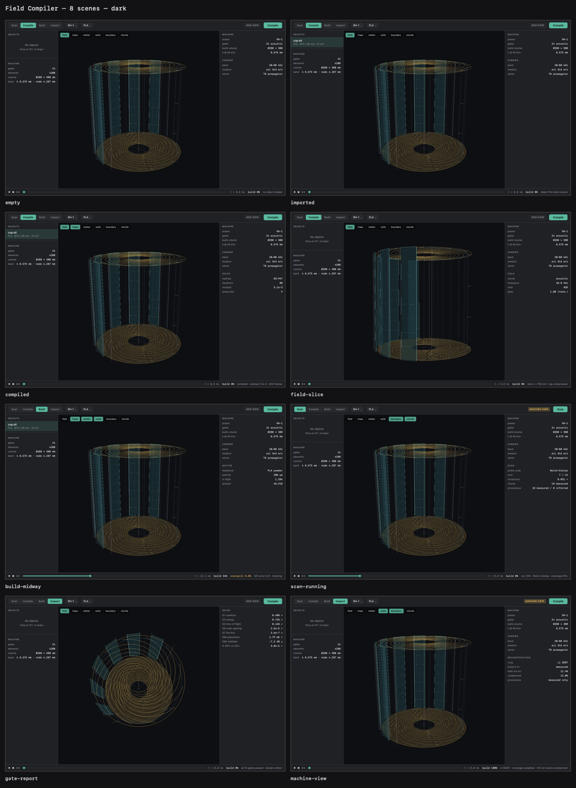

Engineering stack
Documentation of what the Replicator software and hardware stack actually is today: layers, solvers, formats, RH-1, and what is gated vs open. Company story: etherworks.io. Source: Osika-Innovation/replicator.
Overview
The product architecture is a boundary-control instrument. Walls of a sealed volume drive acoustic and electromagnetic fields. Scan records how an object rings. Assemble plays that pattern into feedstock. Dissolve reverses the drive. The tool is the field, not a nozzle or toolpath.
One architectural law binds the stack:
The emulator API is the hardware API. Frames go to a GPU wave emulator today and to electronics later. Same .fcode. No rewrite between twin and machine.
Software stack — RSW-1
The load-bearing artifact is RSW-1, the field compiler in twin/.
| Piece | Choice | Notes |
|---|---|---|
| Platform | macOS 14+ | Verified on Apple Silicon (M5 target in twin README) |
| Language | Swift 6 / SwiftPM | Command Line Tools only — no Xcode required |
| UI | SwiftUI | Views are pure functions of AppState (law L1) |
| GPU | Metal | Shaders compiled at runtime from .metal source |
| Shipped deps | Zero | Foundation / simd / Accelerate / Metal / SwiftUI only |
| Validation oracles | AcousTools (MIT), k-wave-python (LGPL) | Offline twins — not shipped inside the app |
| Products | FieldCore, fieldc, FieldCompilerApp | One core, two front-ends |
Modules
| Module | Responsibility | Status |
|---|---|---|
FieldCore | RH-1 geometry, mesh/voxelizer, T0/T1/T2 solvers, inverse solvers, scan pipeline, gates, receipts, .pattern IO | Gated |
FieldGPU | Metal propagator, scene geometry, orbit camera, offscreen CGImage render | Implemented |
FieldUI | Slicer shell, themes, scene registry, contact-sheet / screenshot harness | Shell exists |
fieldc | CLI: test, gate, machine, focus, gpu, scan, shot, … | Primary entry |
FieldCompilerApp | @main SwiftUI app wiring Core+GPU+UI | Exists |

Machine View in the twin — the instrument surface we actually have.
Solver stack
One solver cannot be both true and interactive. The twin uses tiers:
| Tier | Model | Use | Status |
|---|---|---|---|
| T0 | Rayleigh–Sommerfeld / angular-spectrum propagator, exact adjoint Hᴴ | Interactive viewport, inverse-solver forward model | Gated (G5) |
| T0.5 | BEM scattering | Scattering-aware middle tier | Not built |
| T1 | Acoustic FDTD (staggered grid + sponge) | Scan, ring-down, truth for T0 | Gated |
| T1f | Convergent Born Series | Faster steady-state optional | Not built |
| T2 | Gor'kov radiation force + particle push | Traps, levitation, transport | Gated (G7) |
| T3 | Thermal melt / wet / latch / occupancy | Visible solidification | Not built |
Inverse solvers (compile)
Target field → complex drive u, sharing cached H:
- IBP — iterative back-propagation (baseline)
- GS-PAT — Gerchberg–Saxton on control points (default multi-trap)
- Diff-PAT — Adam on analytic gradient via
Hᴴ(best fidelity)
Scan pipeline (M7)
fieldc scan: FDTD pulse-echo → empty-chamber reference → S[rx][tx] → matrix pencil → chords → .pattern → Machine View L0. Reciprocity QC (G15) and .pattern round-trip (G11) are gated. L1 DORT refuses to image without a measured Green's function. Physics only partly validated; G14 IoU still uninformative; drive amplitudes not yet SI.
Formats & alphabet
| Format | Role |
|---|---|
| Chord | ~100 bytes: complex pole + port-vector. Resolution = chord count |
.pattern | Scan output / object hologram. Chords tagged measured | inferred |
.fcode | Build schedule: time-sequenced boundary drive frames. IO not finished |
| STL | Import geometry for compile (voxelized into the build volume) |
| Receipt JSON | Every gate run writes config hash, git SHA, metrics, pass/fail |
Scan output = build recipe = acceptance test. One alphabet for all three.
Hardware stack — RH-1
Free-standing column. Two chambers, three dual-carrier plate assemblies, six optically-addressed holographic panels. Runs in ordinary air.
| Subsystem | Role |
|---|---|
| Build chamber (above) | Object volume — glass enclosure opens |
| Storage chamber (below) | Mirrored twin for feedstock sort / stage |
| Three plates | Top + double-faced middle + storage deck; sound + EM |
| Acoustic panels ×6 | 24 channels (6 × 4 PMN-PT) — force / muscle |
| EM caps | Microwave sensing + axial drive |
| Optical stem / bore | Feedstock lift + optical sightline |
| BOM class | Single-crystal piezos, FR4-gold PCBs, GaN amps, FPGA; later RP2350 USB backend |
Compiler build volume preset: Ø280 × 300 mm. Envelope numbers in papers currently disagree in places — treat the RH-1 hardware spec as canonical and fix conflicts there first. Twin v1 is acoustic-forward; no Maxwell solver ships yet.
Carriers: phonons = force. Photons = address and sense. That split is load-bearing.
Repo map
| Path | Contents |
|---|---|
twin/ | RSW-1 field compiler (this stack) |
cad/ | RH-1 Blender model, OpenSCAD/CadQuery plate & table, 12-port bench chamber |
papers/ | Architecture, RH-1 spec, modes, carriers, field-compiler spec, bounds |
sims/ | Pre-registered studies (predictions frozen before the run) |
Licenses: code Apache-2.0 · hardware CERN-OHL-P v2 · papers published openly.
Status & gates
From the twin README (honest inventory):
- Done & gated: M0–M2, M4; geometry/viewport; T0/T1/T2; inverse solvers; receipts
- Wired, partial: M7 scan pipeline
- Not: M3/M5/M6/M8/M9; T0.5; T1f; T3;
.fcodeIO; Serial/RP2350 backend; live MTKView; golden-image diffing
Representative gate results on Apple M5 (bars from the twin README): G1 0.40%, G2 0.71%, G3 0.44%, G6 ~0, G7 ~0, G9a within bar. G5 (T0 vs T1) passes. G9b informational. G8 blocked until drive is SI. Claims without receipts are not published numbers.

Headless contact sheet from fieldc shot --all.
How to run
git clone https://github.com/Osika-Innovation/replicator cd replicator/twin swift build -c release ./.build/release/fieldc test # unit suite ./.build/release/fieldc gate --receipt # physics gates → Receipts/ ./.build/release/fieldc machine # RH-1 preset ./.build/release/fieldc gpu # Metal vs CPU ./.build/release/fieldc shot --all # UI contact sheets
Gates write receipts. Claims quote receipts.
What this page is not saying
- There is no integrated v0 in a lab yet — twin + subsystem prototyping.
- Dissolve / CPA on a finished part is open.
- Drive amplitudes are not SI — no quotable levitation force yet.
- Optical compute / holographic RAM are research plans, not product.
- The replicator is not a transporter. Working object size is a chord list (megabytes), not an atomic microstate.
- “Machine builds the next machine” is a later consequence of assemble working, not a current milestone.